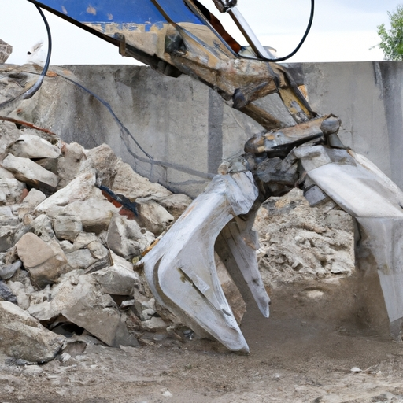
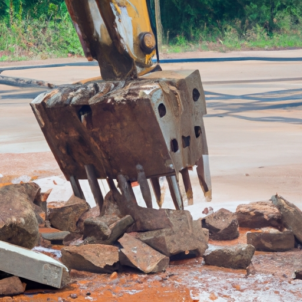

News
Concrete Crushers For Sale
Concrete Crushers For Sale
Jaw Crusher
Impact Crusher
Cone Crusher
Factors to Consider When Buying a Concrete Crusher
Factors to Consider When Buying a Concrete Crusher
Size and capacity
Power source electric or diesel
Mobility and transportation options
Benefits of Using a Concrete Crusher
Benefits of Using a Concrete Crusher
Cost savings on disposal fees
Environmentally friendly solution for recycling concrete waste
Increased efficiency in construction projects
Maintenance Tips for Concrete Crushers
Maintenance Tips for Concrete Crushers
Regular inspection and cleaning
Lubrication of moving parts
Proper storage when not in use
Where to Find Concrete Crushers for Sale
Where to Find Concrete Crushers for Sale
Equipment dealerships
Online marketplaces
Auctions and rental companies
About Us
Contact Us
GrinderCrusherScreen
What is a Concrete Crusher For Sale?
Sep 14, 2024
Proper maintenance and care of a concrete crusher is essential for ensuring its longevity and optimal performance.. A concrete crusher is a heavy-duty machine that is used to crush large chunks of concrete into smaller pieces for recycling or disposal.

What Are the Benefits of Buying a Concrete Crusher For Sale?
Sep 14, 2024
Are you in the construction or demolition industry and looking to save money on disposing of waste materials?. Have you considered investing in a concrete crusher for sale? Purchasing a concrete crusher can offer numerous benefits, one of the main ones being the potential for generating revenue from selling crushed materials.

How to Transform Concrete Waste into Profit with this Top-of-the-Line Crusher
Sep 14, 2024
Concrete recycling has become a crucial aspect of sustainable waste management in recent years.. With the advancement of technology, crushers have made it easier than ever to transform concrete waste into profit.
Discover the Secret to Maximizing Your Construction Budget: Buy a Concrete Crusher Today!
Sep 14, 2024
Are you looking for a way to make the most out of your construction budget?. Look no further than investing in a concrete crusher.
Benefits of using a concrete crusher for sale
Sep 14, 2024
Construction sites can be dangerous places, with heavy machinery, falling debris, and uneven ground posing risks to workers and visitors alike.. That's why ensuring safety on construction sites is paramount, and one way to enhance safety is by using crushers for concrete. Concrete crushers are powerful machines that break down large chunks of concrete into smaller pieces, making it easier to transport and dispose of the material.